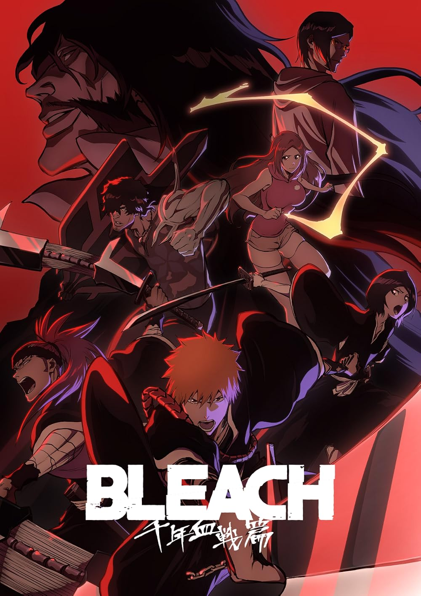

✦ Personal Website ✦

|
✦ Personal Website ✦ |
|
||
|---|---|---|---|---|
Hobi Bermain Game |
|---|
 |
Mobile Legends :Salah satu game yang sering saya mainkan saat ini, hero yang sering saya mainkan adalah Fanny. Alasannya karena hero Fanny memiliki mobilitas yang sangat tinggi, Walaupun butuh ratusan Match (permainan) untuk bisa mahir menggunakannya. |
 |
Minecraft :Game yang biasanya saya mainkan saat tidak ada kouta, Minecraft itu seru banget. Kita bisa melakukan apapun di dalam gamenya seperti menjelajahi gua (cave), membangun rumah, mengalahkan boss Ender Dragon sebagai boss terakir minecraft |
 |
Free Fire :Game Battle Royal yang sangat populer di indonesia karena sangat ringan sehingga bisa dimainkan dengan hp dengan spesifikasi rendah serta mudah dimainkan. |
Hobi Programming |
|---|
 |
Python :Salah satu bahasa pemrograman yang saya sukai. Alasannya karena sintaksnya yang mirip dengan bahasa inggris sehingga mudah dipahami oleh manusia, serta bisa digunakan untuk berbagai kebutuhan mulai dari otomatisasi tugas berulang (scripting), analisis data, pengembangan backend, hingga keamanan siber. |
Hobi Menonton Anime : |
|---|
 |
Bleach :Bleach adalah salah satu seri manga dan anime shonen paling legendaris di dunia karya Tite Kubo. Ceritanya berfokus pada Ichigo Kurosaki, seorang remaja SMA yang mendapatkan kekuatan sebagai Shinigami (Dewa Kematian) dari Rukia Kuchiki. Tugasnya adalah melindungi dunia manusia dari roh-roh jahat yang disebut Hollow, serta memandu jiwa-jiwa murni menuju Soul Society (Alam Roh). (sumber : Wikipedia) |
 |
Attack On Titan :Attack on Titan (bahasa Jepang: Shingeki no Kyojin) adalah seri manga dark fantasy populer karya Hajime Isayama yang berlatar di dunia pasca-apokaliptik. Ceritanya mengikuti perjuangan Eren Yeager, Mikasa Ackerman, dan Armin Arlert yang bergabung dengan pasukan militer setelah kampung halaman mereka dihancurkan oleh monster raksasa pemakan manusia bernama Titan. Seiring berjalannya cerita, fokus plot bergeser dari sekadar bertahan hidup menjadi konflik geopolitik, konspirasi kuno, dan perang global yang berujung pada bencana pemusnahan massal (The Rumbling). (Sumber : Wikipedia) |
 |
Blue Lock:Blue Lock adalah seri manga olahraga asal Jepang bertema sepak bola yang ditulis oleh Muneyuki Kaneshiro dan diilustrasikan oleh Yusuke Nomura.Ceritanya berfokus pada program pelatihan radikal bernama "Blue Lock" yang dibuat oleh Federasi Sepak Bola Jepang (JFA) untuk melahirkan striker paling egois dan terbaik di dunia demi memenangkan Piala Dunia. Tokoh utamanya adalah Yoichi Isagi, seorang penyerang SMA yang berjuang melampaui ratusan pesaingnya. (Sumber : Wikipedia) |
| © 2026 Nico Exdyansyah Putra Zacky. Dibuat dengan HTML murni. |
|---|